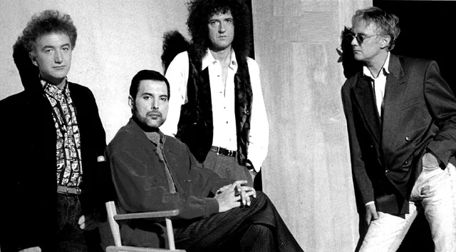

Historia de la banda
Queen se formó en Londres en 1970, con el cantante Freddie Mercury, el guitarrista Brian May, el baterista Roger Taylor y el bajista John Deacon. Cada miembro aportó su talento como compositor, lo que enriqueció enormemente el catálogo musical de la banda. Lanzaron su álbum debut, Queen, en 1973, pero fue con el éxito de su cuarto álbum, A Night at the Opera (1975), que alcanzaron el estrellato mundial. La canción "Bohemian Rhapsody" se convirtió en un himno global y desafió las convenciones de la música rock con su estructura operística y su innovador video musical.
.jpg)
A lo largo de los años 70 y 80, Queen lanzó una serie de álbumes exitosos como News of the World (1977), que incluía los himnos "We Will Rock You" y "We Are the Champions", y The Game (1980), con el éxito bailable "Another One Bites the Dust". Su carisma en el escenario era legendario, y su actuación en el concierto Live Aid de 1985 se considera una de las mejores de la historia del rock.
La banda continuó grabando y girando a pesar del diagnóstico de SIDA de Freddie Mercury, que mantuvo en privado. Tras su fallecimiento en 1991, Queen se desintegró, aunque Brian May y Roger Taylor han continuado su legado en diversos proyectos. La muerte de Mercury marcó el fin de una era, pero su música y su espíritu perduran.
Impacto en la música y la cultura
Innovación musical:
Fusionaron rock, ópera, pop, gospel y hard rock en un sonido único. Experimentaron con técnicas de grabación y sobregrabación, creando arreglos complejos que se convirtieron en su sello distintivo.
Pioneros del videoclip:
Con "Bohemian Rhapsody", Queen creó uno de los primeros videos musicales conceptuales, elevando el formato de un simple clip promocional a una forma de arte.
Maestros del espectáculo:
Sus conciertos eran eventos teatrales y grandiosos, llenos de energía y dramatismo, lo que les valió una reputación como una de las mejores bandas en vivo de todos los tiempos.
Influencia duradera:
Su música ha influenciado a innumerables artistas de géneros tan variados como el rock, el pop y el metal. Canciones como "Bohemian Rhapsody", "We Will Rock You" y "Don't Stop Me Now" siguen siendo himnos populares en eventos deportivos, películas y programas de televisión.